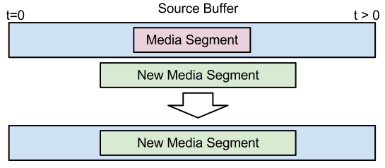
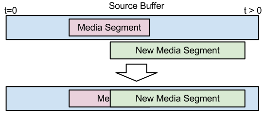
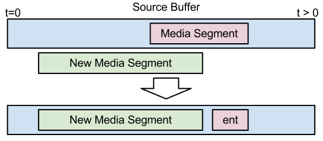
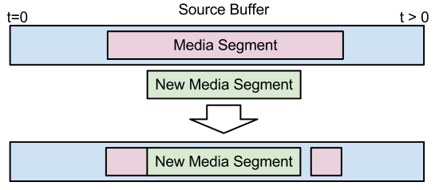

Copyright © 2012 W3C® (MIT, ERCIM, Keio), All Rights Reserved. W3C liability, trademark and document use rules apply.
Status of this Document
This section describes the status of this document at the time of its publication. Other documents may supersede this document.
A list of current W3C publications and the latest revision of this technical report can be found in the
W3C technical reports index at http://www.w3.org/TR/.
This document was published by the HTML working group as an Editor's Draft.
Please submit comments regarding this document by using the W3C's public bug database (
http://www.w3.org/Bugs/Public/
) with the product set to HTML WG and the component set to
Media Source Extensions.
If you cannot access the bug database, submit comments to public-html-media@w3.org
(subscribe,
archives) and arrangements will be made to transpose the comments to the bug database.
All feedback is welcome.
Publication as a Editor's Draft does not imply endorsement by the W3C Membership. This is a draft document and may be updated,
replaced or obsoleted by other documents at any time. It is inappropriate to cite this document as other than work in progress.
This document was produced by a group operating under the 5 February 2004 W3C Patent Policy.
W3C maintains a public list of any patent disclosures made in connection with
the deliverables of the group; that page also includes instructions for disclosing a patent. An individual who has actual knowledge of a patent which
the individual believes contains Essential Claim(s) must disclose the
information in accordance with section 6 of the W3C Patent Policy.
Abstract
This proposal extends HTMLMediaElement to allow
JavaScript to generate media streams for playback.
Allowing JavaScript to generate streams facilitates a variety of use
cases like adaptive streaming and time shifting live streams.
Table of Contents
1. Introduction
This proposal allows JavaScript to dynamically construct media streams for <audio> and <video>.
It defines extensions to HTMLMediaElement that allow JavaScript to pass media segments to the user agent.
A buffering model is also included to describe how the user agent should act when different media segments are
appended at different times. Byte stream specifications for WebM & ISO Base Media File Format are given to specify the
expected format of media segments used with these extensions.

1.1. Goals
This proposal was designed with the following goals in mind:
- Allow JavaScript to construct media streams independent of how the media is fetched.
- Define a splicing and buffering model that facilitates use cases like adaptive streaming, ad-insertion, time-shifting, and video editing.
- Minimize the need for media parsing in JavaScript.
- Leverage the browser cache as much as possible.
- Provide byte stream definitions for WebM & the ISO Base Media File Format.
- Not require support for any particular media format or codec.
1.2. Definitions
1.2.1. Active IDs
The set of source IDs that are providing the selected video track and the enabled audio tracks.
1.2.2. Source ID
An ID registered with sourceAddId() that identifies a distinct sequence of initialization segments & media segments appended to a specific source buffer.
1.2.3. Source Buffer
A hypothetical buffer that contains the media segments for a particular source ID. When media segments are passed to sourceAppend() they update the state of this buffer. The source buffer only allows a single media segment to cover a specific point in the presentation timeline of each track. If a media segment gets appended that contains media data overlapping (in presentation time) with media data from an existing segment, then the new media data will override the old media data. Since media segments depend on initialization segments the source buffer is also responsible for maintaining these associations. During playback, the media element pulls segment data out of the source buffers, demultiplexes it if necessary, and enqueues it into track buffers so it will get decoded and displayed. sourceBuffered() describes the time ranges that are covered by media segments in the source buffer.
1.2.4. Track Buffer
A hypothetical buffer that represents initialization and media data for a single AudioTrack or VideoTrack that has been queued for playback. This buffer may not exist in actual implementations, but it is intended to represent media data that will be decoded no matter what media segments are appended to update the source buffer. This distinction is important when considering appends that happen close to the current playback position. Details about transfers between the source buffer and track buffers are given here.
1.2.5. Initialization Segment
A sequence of bytes that contains all of the initialization information required to decode a sequence of media segments. This includes codec initialization data, trackID mappings for multiplexed segments, and timestamp offsets (e.g. edit lists).
Container specific examples of initialization segments:
- ISO Base Media File Format
- A moov box.
- WebM
- The concatenation of the the EBML Header, Segment Header, Info element, and Tracks element.
A sequence of bytes that contain packetized & timestamped media data for a portion of the presentation timeline. Media segments are always associated with the most recently appended initialization segment.
Container specific examples of media segments:
- ISO Base Media File Format
- A moof box followed by one or more mdat boxes.
- WebM
- A Cluster element
1.2.7. Random Access Point
A position in a media segment where decoding and continuous playback can begin without relying on any previous data in the segment. For video this tends to be the location of I-frames. In the case of audio, most audio frames can be treated as a random access point. Since video tracks tend to have a more sparse distribution of random access points, the location of these points are usually considered the random access points for multiplexed streams.
2. Source Buffer Model
The subsections below outline the buffering model for this proposal. It describes how to add and remove source buffers from the presentation and describes the various rules and behaviors associated with appending data to an individual source buffer. At the highest level, the web application simply creates source buffers and appends a sequence of initialization segments and media segments to update the buffer's state. The media element pulls media data out of the source buffers, plays it, and fires events just like it would if a normal URL was passed to the src attribute. The web application is expected to monitor media element events to determine when it needs to append more media segments.
2.1. Adding a new Source ID
Creating a new source buffer is initiated by calling sourceAddId(). This method allows the web application to specify the source ID it wants to associate with a new source buffer and indicates the format of the data it intends to append. The user agent looks at the type information and determines whether it supports the desired format and has sufficient resources to handle a new source buffer for this device. If the user agent can't support another source ID then it will throw an appropriate exception to signal why the request couldn't be satisfied.
2.2. Basic appending model
Updating the state of a source buffer requires appending at least one initialization segment and one or more media segments via sourceAppend(). The following list outlines some of the basic rules for appending segments.
- The first segment appended MUST be an initialization segment.
- All media segments are associated with the most recently appended initialization segment.
- A whole segment must be appended before another segment can be started unless
sourceAbort() is called.
- Segments can be appended in pieces. (i.e. A 4096 byte segment can be spread across four 1024 byte calls to
sourceAppend()).
- If a media segment requires different configuration information (e.g. codec parameters, new internal trackIDs, metadata) from what is in the most recently appended initialization segment, a new initialization segment with the new configuration information MUST be appended before the media segment requiring this information is appended.
- A new media segment can overlap, in presentation time, a segment that was previously appended. The new segment will override the previous data.
- Media segments can be appended in any order.
Note: In practice finite buffer space and maintaining uninterrupted playback will bias appending towards time increasing order near the current playback position. Out of order appends facilitate adaptive streaming, ad insertion, and video editing use cases.
- The media element may start copying data from a media segment to the track buffers before the entire segment has been appended. This prevents unnecessary delays for media segments that cover a large time range.
2.3. Initialization Segment constraints
To simplify the implementation and facilitate interoperability, a few constraints are placed on the initialization segments that are appended to a specific source ID:
- The number and type of tracks MUST be consistent across all initialization segments.
For example, if the first initialization segment has 2 audio tracks and 1 video track, then all initialization segments that follow, for this source ID MUST describe 2 audio tracks and 1 video track.
- Internal trackIDs do not need to be the same across initialization segments only if the segment describes one track of each type.
For example, if an initialization segment describes a single audio track and a single video track, the internal trackIDs do not need to be the same.
- Internal trackIDs MUST be the same across initialization segments if multiple tracks for a single type are described. (e.g. 2 audio tracks).
- Codecs changes are not allowed.
For example, you can't have an initialization segment that specifies a single AAC track and then follows it with one that contains AMR-WB. Support for multiple codecs is handled with multiple source IDs.
- Video frame size changes are allowed and MUST be supported seamlessly.
Note: This will cause the <video> display region to change size if you don't use CSS or HTML attributes (width/height) to constrain the element size.
- Audio channel count changes are allowed, but they may not be seamless and could trigger downmixing.
Note: This is a quality of implementation issue because changing the channel count may require reinitializing the audio device, resamplers, and channel mixers which tends to be audible.
To simplify the implementation and facilitate interoperability, a few constraints are placed on the media segments that are appended to a specific source ID:
- All timestamps must be mapped to the same presentation timeline.
- Segments should start with a random access point to facilitate seamless splicing at the segment boundary.
- Gaps between media segments that are smaller than the audio frame size are allowed and should be rendered as silence. Such gaps should not be reflected by
sourceBuffered().
Note: This is intended to simplify switching between audio streams where the frame boundaries don't always line up across encodings (e.g. Vorbis).
2.5. Appending the first Initialization Segment
Once a new source ID has been added, the source buffer expects an initialization segment to be appended first. This first segment indicates the number and type of streams contained in the media segments that follow. This allows the media element to configure the necessary decoders and output devices. This first segment can also cause a readyState transition to HAVE_METADATA if this is the first source ID registered, or if it is the first track of a specific type (i.e. first audio or first video track). If neither of the conditions hold then the tracks for this new source ID will just appear as disabled tracks and won't affect the current readyState until they are selected. The media element will also add the appropriate tracks to the audioTracks & videoTracks collections and fire the necessary change events. The description for sourceAppend() contains all the details.
If a media segment is appended to a time range that is not covered by existing segments in the source buffer, then its data is copied directly into the source buffer. Addition of this data may trigger readyState transitions depending on what other data is buffered and whether the media element has determined if it can start playback. Calls to sourceBuffered() will always reflect the current TimeRanges buffered in the source buffer.
2.7. Appending a Media Segment over a buffered region
There are several ways that media segments can overlap segments in the source buffer. Behavior for the different overlap situations are described below. If more than one overlap applies, then the start overlap gets resolved first, followed by any complete overlaps, and finally the end overlap. If a segment contains multiple tracks then the overlap is resolved independently for each track.
2.7.1 Complete Overlap

The figure above shows how the source buffer gets updated when a new media segment completely overlaps a segment in the buffer. In this case, the new segment completely replaces the old segment.
2.7.2 Start Overlap

The figure above shows how the source buffer gets updated when the beginning of a new media segment overlaps a segment in the buffer. In this case the new segment replaces all the old media data in the overlapping region. Since media segments are constrained to starting with random access points, this provides a seamless transition between segments.
The one case that requires special attention is where an audio frame overlaps with the start of the new media segment. The base level behavior that MUST be supported requires dropping the old audio frame that overlaps the start of the new segment and inserting silence for the small gap that is created. A higher quality implementation could support outputting a portion of the old segment and all of the new segment or crossfade during the overlapping region. This is a quality of implementation issue. The key property here though is the small silence gap should not be reflected in the ranges reported by sourceBuffered()
2.7.3 End Overlap

The figure above shows how the source buffer gets updated when the end of a new media segment overlaps a segment in the buffer. In this case, the media element tries to keep as much of the old segment as possible. The amount saved depends on where the closest random access point, in the old segment, is to the end of the new segment. In the case of audio, if the gap is smaller than the size of an audio frame, then the media element should insert silence for this gap and not reflect it in sourceBuffered().
An implementation may keep old segment data before the end of the new segment to avoid creating a gap if it wishes. Doing this though can significantly increase implementation complexity and could cause delays at the splice point. The key property that must be preserved is the entirety of the new segment gets added to the source buffer and it is up to the implementation how much of the old segment data is retained. The web application can use sourceBuffered() to determine how much of the old segment was preserved.
2.7.4 Middle Overlap

The figure above shows how the source buffer gets updated when the new media segment is in the middle of the old segment. This condition is handled by first resolving the start overlap and then resolving the end overlap.
2.8. Source Buffer to Track Buffer transfer
The source buffer represents the media that the web application would like the media element to play. The track buffer contains the data that will actually get decoded and rendered. In most cases the track buffer will simply contain a subset of the source buffer near the current playback position. These two buffers start to diverge though when media segments that overlay or are very close to the current playback position are appended. Depending on the contents of the new media segment it may not be possible to switch to the new data immediately because there isn't a random access point close enough to the current playback position. The quality of the implementation determines how much data is considered "in the track buffer". It should transfer data to the track buffer as late as possible whilst maintaining seamless playback. Some implementations may be able to instantiate multiple decoders or decode the new data significantly faster than real-time to achieve a seamless splice immediately. Other implementations may delay until the next random access point before switching to the newly appended data. Notice that this difference in behavior is only observable when appending close to the current playback position. The track buffer represents a media subsegment, like a group of pictures or something with similar decode dependencies, that the media element commits to playing. This commitment may be influenced by a variety of things like limited decoding resources, hardware decode buffers, a jitter buffer, or the desire to limit implementation complexity.
Here is an example to help clarify the role of the track buffer. Say the current playback position has a timestamp of 8 and the media element pulled frames with timestamp 9 & 10 into the track buffer. The web application then appends a higher quality media segment that starts with a random access point at timestamp 9. The source buffer will get updated with the higher quality data, but the media element won't be able to switch to this higher quality data until the next random access point at timestamp 20. This is because a frame for timestamp 9 is already in the track buffer. As you can see the track buffer represents the "point of no return." for decoding. If a seek occurs the media element may choose to use the higher quality data since a seek might imply flushing the track buffer and the user expects a break in playback.
2.9. Media Segment Eviction
When a new media segment is appended, memory constraints may cause previously appended segments to get evicted from the source buffer. The eviction algorithm is implementation dependent, but segments that aren't likely to be needed soon are the most likely to get evicted. The sourceBuffered() method allows the web application to monitor what time ranges are currently buffered in the source buffer.
2.10. Removing a Source ID
Removing a source ID with sourceRemoveId() releases all resources associated with the ID. This includes destroying the source buffer, track buffers, and decoders. The media element will also remove the appropriate tracks from audioTracks & videoTracks and fire the necessary change events. Playback may become degraded or stop if the currently selected VideoTrack or the only enabled AudioTracks are removed.
We extend HTML media elements to allow media data to be streamed into them from JavaScript.
partial interface HTMLMediaElement {
// URL passed to src attribute to enable the media source logic.
readonly attribute DOMString mediaSourceURL;
// Manages IDs for appending media to the source.
void sourceAddId(DOMString id, DOMString type);
void sourceRemoveId(DOMString id);
// Returns the time ranges buffered for a specific ID.
TimeRanges sourceBuffered(DOMString id);
// Append segment data.
void sourceAppend(DOMString id, Uint8Array data);
// Abort the current segment.
void sourceAbort(DOMString id);
// end of stream status codes.
const unsigned short EOS_NO_ERROR = 0;
const unsigned short EOS_NETWORK_ERR = 1;
const unsigned short EOS_DECODE_ERR = 2;
void sourceEndOfStream(unsigned short status);
// states
const unsigned short SOURCE_CLOSED = 0;
const unsigned short SOURCE_OPEN = 1;
const unsigned short SOURCE_ENDED = 2;
readonly attribute unsigned short sourceState;
[TreatNonCallableAsNull] attribute Function? onsourceopen;
[TreatNonCallableAsNull] attribute Function? onsourceended;
[TreatNonCallableAsNull] attribute Function? onsourceclose;
};
The mediaSourceURL attribute returns the URL used to enable the Media Source extension methods. To enable the Media Source extensions on a media element, assign this URL to the src attribute. The format of the URL is browser specific and may be unique for each HTMLMediaElement. The mediaSourceURL on one HTMLMediaElement should not be assigned to the src attribute on a different HTMLMediaElement.
Example mediaSourceURL:
x-media-source:e183f43d-c8a3-4905-bf89-e8e920041c7c
Note the browser specific scheme and use of a UUID for the path to make it unique.
Using
mediaSourceURL is one approach to switching the media element into "media source" mode. Alternative approaches should be explored to improve consistency with other APIs and provide a declarative mechanism for enabling "media source" mode.
The sourceAddId(id, type) method must run the following steps:
- If id is null or an empty string then throw an
INVALID_ACCESS_ERR exception and abort these steps.
- If id specifies an ID that has been previously added then throw a
INVALID_STATE_ERR exception and abort these steps.
- If type is null or an empty then throw an
INVALID_ACCESS_ERR exception and abort these steps.
- If type contains a MIME type that is not supported or contains a MIME type that is not supported with the types specified for other sourceIDs, then throw a
NOT_SUPPORTED_ERR exception and abort these steps.
- If the user agent can't handle any more IDs then throw a
QUOTA_EXCEEDED_ERR exception and abort these steps.
- If the
sourceState attribute is not in the SOURCE_OPEN state then throw an INVALID_STATE_ERR exception and abort these steps.
- Allocate source buffer resources for id.
The sourceRemoveId(id) method must run the following steps:
- If id is null or an empty string then throw an
INVALID_ACCESS_ERR exception and abort these steps.
- If the
sourceState attribute is in the SOURCE_CLOSED state then throw an INVALID_STATE_ERR exception and abort these steps.
- If id specifies an ID that has not been previously added then abort these steps.
- Remove track information from
audioTracks and videoTracks for all tracks associated with id and fire a simple event named change on the modified lists.
- Destroy source buffer resources for id.
The sourceBuffered(id) method must run the following steps:
- If id is null or an empty string then throw an
INVALID_ACCESS_ERR exception and abort these steps.
- If id specifies an ID that has not been previously added with
sourceAddId() then throw a SYNTAX_ERR exception and abort these steps.
- If the
sourceState attribute is in the SOURCE_CLOSED state then throw an INVALID_STATE_ERR exception and abort these steps.
- Return
TimeRanges for the source buffer associated with id.
The sourceAppend(id, data) method must run the following steps:
- If id is null or an empty string then throw an
INVALID_ACCESS_ERR exception and abort these steps.
- If id specifies an ID that has not been previously added with
sourceAddId() then throw a SYNTAX_ERR exception and abort these steps.
- If data is null then throw an
INVALID_ACCESS_ERR exception and abort these steps.
- If the
sourceState attribute is not in the SOURCE_OPEN state then throw an INVALID_STATE_ERR exception and abort these steps.
- If data.byteLength is 0 abort these steps.
- Copy contents of data into the source buffer associated with id.
- Handle end of segment cases:
- If data completes the first initialization segment appended to the source buffer run the following steps:
-
- Handle state transitions:
- If the
readyState attribute is HAVE_NOTHING:
- Set
readyState attribute to HAVE_METADATA and fire the appropriate event for this transition.
- If the
readyState attribute is greater than HAVE_CURRENT_DATA and the initialization segment contains the first video or first audio track in the presentation:
-
Set
readyState attribute to HAVE_METADATA and fire the appropriate event for this transition.
- Otherwise:
- Continue
- Update
audioTracks
- If initialization segment contains the first audio track:
- Add an
AudioTrack and mark it as enabled.
- If initialization segment contains audio tracks beyond those already in the presentation:
- Add a disabled
AudioTrack for each audio track in the initialization segment.
- Update
videoTracks:
- If initialization segment contains the first video track:
- Add a
VideoTrack and mark it as selected.
- If initialization segment contains the video tracks beyond those already in the presentation:
- Add a disabled
VideoTrack for each video track in the initialization segment.
- If the
readyState attribute is HAVE_METADATA and data causes all active IDs to have media data for the current playback position.
- Set
readyState attribute to HAVE_CURRENT_DATA and fire the appropriate event for this transition.
- If the
readyState attribute is HAVE_CURRENT_DATA and data causes all active IDs to have media data beyond the current playback position.
- Set
readyState attribute to HAVE_FUTURE_DATA and fire the appropriate event for this transition.
- If the
readyState attribute is HAVE_FUTURE_DATA and data causes all active IDs to have enough data to start playback.
- Set
readyState attribute to HAVE_ENOUGH_DATA and fire the appropriate event for this transition.
The sourceAbort(id) method must run the following steps:
- If id is null or an empty string then throw an
INVALID_ACCESS_ERR exception and abort these steps.
- If id specifies an ID that has not been previously added with
sourceAddId() then throw a SYNTAX_ERR exception and abort these steps.
- If the
sourceState attribute is not in the SOURCE_OPEN state then throw an INVALID_STATE_ERR exception and abort these steps.
- The media element aborts parsing the current segment.
- If waiting for the start of a new segment
- Continue
- If the current segment is an initialization segment
- Flush any data associated with this partial segment.
- If the current segment is a media segment
- The media element may keep any media data it finds valuable in the partial segment. For example if the abort happens in the middle of a 10 second media segment, the media element may choose to keep the 5 seconds of media data it has already parsed in the source buffer.
sourceBuffered() will reflect what data, if any, was kept.
- The media element resets the segment parser so that it can accept a new initialization segment.
End of stream status values:
-
EOS_NO_ERROR (numeric value 0)
- The stream ended normally without any errors.
-
EOS_NETWORK_ERR (numeric value 1)
- The stream ended prematurely because of a network error. If the JavaScript code fetching media data encounters a network error it should use this status code to terminate playback. This will cause the media element's error handling code to run and the
error attribute to be set to MediaError.MEDIA_ERR_NETWORK
-
EOS_DECODE_ERR (numeric value 2)
- The stream ended prematurely because there was an error while decoding the media data. If the JavaScript code fetching media data has problems parsing the data it should use this status code to terminate playback. This will cause the media element's error handling code to run and the
error attribute to be set to MediaError.MEDIA_ERR_DECODE
The sourceEndOfStream(status) method must run the following steps:
- If the
sourceState attribute is not in the SOURCE_OPEN state then throw an INVALID_STATE_ERR exception and abort these steps.
- Change the
sourceState attribute value to SOURCE_ENDED.
- If status is set to
EOS_NO_ERROR
- Notify the media element that it now has all of the media data. Playback should continue until all the media passed in via
sourceAppend() has been played.
- If status is set to
EOS_NETWORK_ERR
- Run the "If the connection is interrupted, causing the user agent to give up trying to fetch the resource" section of the resource fetch algorithm
- If status is set to
EOS_DECODE_ERR
- Run the "If the media data is corrupted" section of the resource fetch algorithm
- Otherwise
- Throw an
INVALID_ACCESS_ERR exception.
The sourceState attribute represents the state of the source. It can have the following values:
-
SOURCE_CLOSED (numeric value 0)
- Indicates the source is not currently attached to a media element.
-
SOURCE_OPEN (numeric value 1)
- The source has been opened by a media element.
-
SOURCE_ENDED (numeric value 2)
-
sourceEndOfStream() has been called on this source.
When the media element is created sourceState must be set to SOURCE_CLOSED (0).
4. Event Summary
5. Algorithms
5.1 Attaching to a media element
- Set the
src attribute on a media element or the src attribute on a <source> element associated with a media element to mediaSourceURL
-
When the media element attempts the resource fetch algorithm with the URL from mediaSourceURL it will take one of the following actions:
- If
sourceState is NOT set to SOURCE_CLOSED
- Abort media element's resource fetch algorithm and run the steps to report a
MEDIA_ERR_SRC_NOT_SUPPORTED error.
- Otherwise
-
- Set
sourceState attribute to SOURCE_OPEN
- Fire a simple event named
sourceopen.
- Allow resource fetch algorithm to progress based on data passed in via
sourceAppend()
5.2 Detaching from a media element
The following steps are run in any case where the media element is going to transition to NETWORK_EMPTY and fire an emptied event. These steps should be run right before the transition.
- Set
sourceState attribute to SOURCE_CLOSED
- Fire a simple event named
sourceclose.
5.3 Seeking
- The media element
seeking algorithm starts and has reached the stage where it is about to fire the seeking event.
- If the
sourceState attribute is set to SOURCE_ENDED, then the media element sets the sourceState attribute to SOURCE_OPEN and fires a simple event named sourceopen
- The media element
seeking algorithm fires the seeking event
- The media element looks for media segments containing the desired seek point in the source buffers for all the active IDs
- If one or more of the active IDs is missing media segments for the desired seek point
-
- Set
readyState attribute to HAVE_METADATA and fire the appropriate event for this transition.
- The media element waits for the necessary media segments to be passed to
sourceAppend(). The web application can use sourceBuffered() to determine what the media element needs to resume playback.
- Otherwise
- Continue
- The media element resets all decoders and initializes each one with data from the appropriate initialization segment.
- The media element feeds data from the media segments into the decoders until the desired seek point is reached.
- The media element resumes the
seeking algorithm and fires the seeked event indicating that the seek has completed.
5.4 Source Buffer Monitoring
The following steps are periodically run during playback to make sure that all of the source buffers for the active IDs have enough data to ensure uninterrupted playback. Appending new segments and changing the set of active IDs also cause these steps to run because they affect the conditions that trigger state transitions. The web application can monitor changes in readyState to drive media segment appending.
- If
sourceBuffered() for all active IDs does not contain TimeRanges for the current playback position:
-
- Set
readyState attribute to HAVE_METADATA and fire the appropriate event for this transition.
- Abort remaining steps
- If
sourceBuffered() for all active IDs contain TimeRanges that include the current playback position and enough data to ensure uninterrupted playback:
-
- Set
readyState attribute to HAVE_ENOUGH_DATA and fire the appropriate event for this transition.
- Playback may resume at this point if it was previously suspended by a transition to
HAVE_CURRENT_DATA.
- Abort remaining steps
- If
sourceBuffered() for at least one active ID contains a TimeRange that includes the current playback position but not enough data to ensure uninterrupted playback:
-
- Set
readyState attribute to HAVE_FUTURE_DATA and fire the appropriate event for this transition.
- Playback may resume at this point if it was previously suspended by a transition to
HAVE_CURRENT_DATA.
- Abort remaining steps
- If
sourceBuffered() for at least one active ID contains a TimeRange that ends at the current playback position and does not have a range covering the time immediately after the current position:
-
- Set
readyState attribute to HAVE_CURRENT_DATA and fire the appropriate event for this transition.
- Playback is suspended at this point since the media element doesn't have enough data to advance the timeline.
- Abort remaining steps.
The bytes provided through sourceAppend() for a source ID form a logical byte stream. The format of this byte stream depends on the media container format in use and is defined in a byte stream format specification. Byte stream format specifications based on WebM and the ISO Base Media File Format are provided below. If these formats are supported then the byte stream formats described below MUST be supported.
This section provides general requirements for all byte stream formats:
- A byte stream format specification MAY define initialization segments and MUST define media segments.
- It must be possible to identify segment boundaries and segment type (initialization or media) by examining the byte stream alone.
- The combination of an Initialization Segment and any contiguous sequence of Media Segments associated with it must:
- Identify the number and type (audio, video, text, etc.) of tracks in the Segments
- Identify the decoding capabilities needed to decode each track (i.e. codec and codec parameters)
- If a track is encrypted, provide any encryption parameters necessary to decrypt the content (except the encryption key itself)
- For each track, provide all information necessary to decode and render the earliest random access point in the sequence of Media Segments and all subsequent samples in the sequence (in presentation time). This includes, in particular,
- Information that determines the intrinsic width and height of the video (specifically, this requires either the picture or pixel aspect ratio, together with the encoded resolution).
- Information necessary to convert the video decoder output to a format suitable for display
- Identify the global presentation timestamp of every sample in the sequence of Media Segments
- For example, if I1 is associated with M1, M2, M3 then the above must hold for all the combinations I1+M1, I1+M2, I1+M1+M2, I1+M2+M3 etc.
Byte stream specifications must at a minimum define constraints which ensure that the above requirements hold. Additional constraints may be defined, for example to simplify implementation.
Initialization segments are an optimization. They allow a byte stream format to avoid duplication of information in Media Segments that is the same for many Media Segments. Byte stream format specifications need not specify Initialization Segment formats, however. They may instead require that such information is duplicated in every Media Segment.
6.1 WebM Byte Streams
This section defines segment formats for implementations that choose to support WebM.
6.1.1. Initialization Segments
A WebM initialization segment must contain a subset of the elements at the start of a typical WebM file.
The following rules apply to WebM initialization segments:
- The initialization segment must start with an EBML Header element, followed by a Segment header.
- The size value in the Segment header must signal an "unknown size" or contain a value large enough to include the Segment Information and Tracks elements that follow.
- Exactly one Segment Information element must appear after the Segment header.
- Exactly one Tracks element must appear after the Segment Information element.
-
Meta Seek Information, Cues, Chapters, and various Global Elements may follow the Segment header but the contents of these elements will be ignored.
Note: This enables the use case where the contents of a WebM file are simply appended without any inspection or reformatting.
A WebM media segment is a single Cluster element.
The following rules apply to WebM media segments:
- The Timecode element in the Cluster contains a presentation timestamp in TimecodeScale units.
- The TimecodeScale in the WebM initialization segment most recently appended applies to all timestamps in the Cluster
- The Cluster header may contain an "unknown" size value. If it does then the end of the cluster is reached when another Cluster header is encountered or an element header that indicates the start of an WebM initialization segment.
- Block & SimpleBlock elements must be in time increasing order consistent with the WebM spec.
- If the most recent WebM initialization segment describes multiple tracks, then blocks from all the tracks must be present and interleaved in time increasing order.
-
Cues or Chapters elements may follow a Cluster element. These elements should be accepted and ignored by the user agent.
6.1.3. Establishing the Presentation Start Timestamp
The timestamp in the first block of the first media segment appended establishes the starting timestamp for the presentation timeline. All media segments appended after this first segment are expected to have timestamps greater than or equal to this timestamp.
If for some reason a web application doesn't want to append data at the beginning of the timeline, it can establish the starting timestamp by appending a Cluster element that only contains a Timecode element with the presentation start time. This must be done before any other media segments are appended.
6.1.4. Random Access Points
A SimpleBlock element with its Keyframe flag set signals the location of a random access point for that track. Media segments containing multiple tracks are only considered a random access point if the first SimpleBlock for each track has its Keyframe flag set. The order of the multiplexed blocks should conform to the WebM Muxer Guidelines.
6.2 ISO Base Media File Format Byte Streams
This section defines segment formats for implementations that choose to support the ISO Base Media File Format
ISO/IEC 14496-12 (ISO BMFF).
6.2.1. Initialization Segments
An ISO BMFF initialization segment shall contain a single Movie Header Box (moov). The tracks in the Movie Header Box shall not contain any samples (i.e. the entry_count in the stts, stsc and stco boxes shall be set to zero). A Movie Extends (mvex) box shall be contained in the
Movie Header Box to indicate that Movie Fragments are to be expected.
The initialization segment may contain Edit Boxes (edts) which provide a mapping of composition times for each track to the global presentation time.
An ISO BMFF media segment shall contain a single Movie Fragment Box (moof) followed by one or more Media Data Boxes (mdat).
The following rules shall apply to ISO BMFF media segments:
- The Movie Fragment Box shall contain at least one Track Fragment Box (traf).
- The Movie Fragment Box shall use movie-fragment relative addressing and the flag default-base-is-moof shall be set; absolute byte-offsets shall not be used.
- External data references shall not be used.
- If the Movie Fragment contains multiple tracks, the duration by which each track extends should be as close to equal as practical.
- Each Track Fragment Box shall contain a Track Fragment Decode Time Box (tfdt)
- The Media Data Boxes shall contain all the samples referenced by the Track Run Boxes (trun) of the Movie Fragment Box.
The Track Fragment Decode Time Box is defined in ISO/IEC 14496-12 Amendment 3.
6.2.3. Establishing the Presentation Start Timestamp
The earliest presentation timestamp of any sample of the first media segment appended establishes the starting timestamp for the presentation timeline. All media segments appended after this first segment are expected to have presentation timestamps greater than or equal to this timestamp.
If for some reason a web application doesn't want to append data at the beginning of the timeline, it can establish the starting timestamp by appending a Movie Fragment Box containing a Track Fragment Box
containing a Track Fragment Decode Time Box. The start time of the presentation is then the presentation time of a hypothetical sample with zero composition offset. This must be done before any other media segments are appended.
6.2.4. Random Access Points
A random access point as defined in this specification corresponds to a Stream Access Point of type 1 or 2 as defined in Annex I of ISO/IEC 14496-12 Amendment 3.
7. Examples
Example use of the Media Source Extensions
<script>
var sourceID = "123";
function onOpen(e) {
var video = e.target;
var headers = GetStreamHeaders();
if (headers == null) {
// Error fetching headers. Signal end of stream with an error.
video.sourceEndOfStream(HTMLMediaElement.EOS_NETWORK_ERR);
}
video.sourceAddId(sourceID, 'video/webm; codecs="vorbis,vp8"');
// Append the stream headers (i.e. WebM Header, Info, and Tracks elements)
video.sourceAppend(sourceID, headers);
// Append some initial media data.
video.sourceAppend(sourceID, GetNextCluster());
}
function onSeeking(e) {
var video = e.target;
// Abort current segment append.
video.sourceAbort(sourceID);
// Notify the cluster loading code to start fetching data at the
// new playback position.
SeekToClusterAt(video.currentTime);
// Append clusters from the new playback position.
video.sourceAppend(sourceID, GetNextCluster());
video.sourceAppend(sourceID, GetNextCluster());
}
function onProgress(e) {
var video = e.target;
if (video.sourceState == video.SOURCE_ENDED)
return;
// If we have run out of stream data, then signal end of stream.
if (!HaveMoreClusters()) {
video.sourceEndOfStream(HTMLMediaElement.EOS_NO_ERROR);
return;
}
video.sourceAppend(sourceID, GetNextCluster());
}
var video = document.getElementById('v');
video.addEventListener('sourceopen', onOpen);
video.addEventListener('seeking', onSeeking);
video.addEventListener('progress', onProgress);
</script>
<video id="v" autoplay> </video>
<script>
var video = document.getElementById('v');
video.src = video.mediaSourceURL;
</script>
8. Open Issues
This section contains issues that have come up during the spec update process, but haven't been resolved yet. The issues and potential solutions are listed below. The potential solutions are just initial thoughts and have not been subjected to rigorous discussion yet.
8.1. Buffer Management
Concerns were raised about limiting the amount of data that JavaScript can append on memory constrained devices. We have briefly discussed making sourceAppend() asynchronous and allowing an "append done" event to fire when the user agent is ready to accept more data.
8.2. Capability Detection
Since user agents may have different limitations on how they handle media segment overlaps, the web application needs a mechanism to detect the user agent's capabilities. We have briefly discussed adding a parameter, similar to 'codec', to the MIME type passed to sourceAddId(). We have not discussed any specific details beyond that.
8.3. Append URL
There have been discussions about changing sourceAppend() to take a URL and optional start & end offset parameters instead of a Uint8Array. The current byte stream specs don't really require access to the raw bytes and if JavaScript wants to construct its own stream from bytes it could use a BlobBuilder and a Blob URL. Going down this path removes the need for a streaming XHR API and could improve interactions with the browser cache. Download progress could be reported through an "append progress" event so that bitrate calculations could be made by JavaScript.
8.4. Timestamp Offset
There have been some discussions about adding a method that applies an offset to the timestamps in media segments. Ad insertion and mashups where the content being appended does not have timestamps that match the desired location in the presentation timeline are the primary motivators for this feature. A method along the lines of sourceTimestampMapping(presentationTimestamp, segmentTimestamp) could specify the timestamp mapping to use for future media segments that get appended. The mapping would be applied at append time before the data goes into the source buffer. Adding a feature like this would prevent the web application from having to rewrite timestamps in the media segments. The exact semantics and details of this feature still need to be worked out.
8.5. Timed Text
The current text focuses on behavior for audio and video. Behavior for timed text still needs to be defined.
8.6. WebAudio Integration
This proposal may overlap with portions of the Audio WG draft. Further investigation is needed around how these two proposals will work together.
8.7. Track Identification and Management
Define how language and kind can be set on AudioTrack & VideoTrack objects. This information may be inside the manifest instead of initialization segments so we need a way for JavaScript to set this.
Specify a way to identify which source ID an AudioTrack or VideoTrack is associated with.
9. Revision History
| Version |
Comment |
| 0.5 |
Minor updates before proposing to W3C HTML-WG. |
| 0.4 |
Major revision. Adding source IDs, defining buffer model, and clarifying byte stream formats. |
| 0.3 |
Minor text updates. |
| 0.2 |
Updates to reflect initial WebKit implementation. |
| 0.1 |
Initial Proposal |